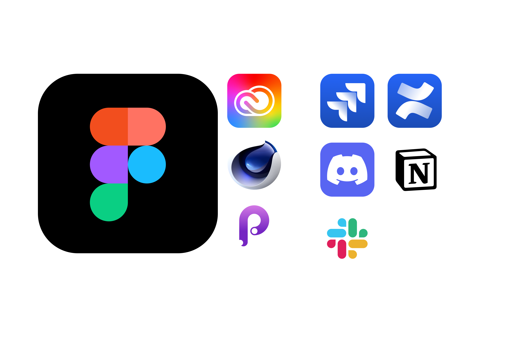

Timonov Maksim
Product design & Design management
Summary
8+ years of experience as a UI/UX and product designer. I have worked in digital agencies and fintech companies. I have a master's degree in graphic design. I started my career in digital agencies as an independent UI/UX designer. I grew up as a lead designer in them and now have 5+ years of experience as a lead designer. I developed mobile applications and WEB services.
Design management
What do I do as manager
A
Design team
- Hiring and managing a design team
- Participation in the evaluation of 3600 performance interviews
- Compilation of competency matrices, setting personal goals
- Conducting personal (O2O) interviews
- Working with in-house and outsourced designers
R
Working pipeline
- Work planning, meeting deadlines
- Working with streaming teams
- Building effective design delivery pipelines with research
- Conducting agile events (retro, daily, syncs)
T
Brand and design system
- Development and support of a design system on web, iOS, android platforms
- Work with a ready-made brand book of the company
- Development of corporate identity and brand book for new projects
UX design and research
Clear and effective design
UX research
Organization and conduct of qualitative and quantitative research. In depth interviews. Formation of UX reports and the formation of a research base for the team.
A stream of hypotheses
Organization of A/B testing with a choice of metrics. Processing raw CSV data. Working with analytical tools and generating SQL queries.
Best practics
Team facilitation and use of design thinking frameworks, personas, JTBD, CJM, Service blue print. For double diamond designers and others.
Experience for the whole team
One source of truth for the entire cross-functional team. Standards for how design layouts, descriptions, scenarios and task conditions are prepared.
Simplicity and Accessibility
Advocate for the user in the team. Application of heuristic knowledge in UI. Facilitating the human centric design of the entire team. Accounting for platform guidelines HIG, Material guidelines, W3C.
Flows, maps and paths
Building empany maps and CJM clients. Organization and work with feedback from users. Building scripts for onboarding, mailings, buying goods, etc.
Testing and Prototyping
With developers in the same language
Working with developers
When developing scenarios and layouts, all possible solutions, user behavior, conditions and environment are taken into account. Fixed in combinations in layouts and tables in the project knowledge base.
I can work with Git (GitHub, GitLab), Atom, sublime text, terminal. I deploy test benches through Terminal. I participate in the work of the team from the early stages of MVP and MLP.

Rapid Prototyping
For rapid prototyping and research I use
- Figma - Animated Prototypes for Teams and Remote Research
- Principle of complex animation and timings for developers
- Webflow - for checking web and html static development
Next, I select tools suitable for the situation, licenses and workflow of tasks.
Complex Prototypes
If it's cheaper to make a complex test to test a hypothesis, I use:
- middleman app (ruby on rail) – web prototypes
- FramerX (react) - for prototyping mobile development and animation
- Webflow (html, js, css) - complete development for landing pages and small sites
I conduct the selection of tools and services for the project. For example, for research with complex surveys, heatmap, etc.
Art direction and graphic design
What does it look like

- Developing and using a brand strategy
- Creating and working with guidelines
- Development and support of 2D and 3D illustrations
- Development of small corporate identity (logos, icons, patterns, styles and fonts) work with BTL and ATL events and products
- Key visual design
Surfaces
- web and mobile - core product design skills
- TV and interactive stands
- Virtual assistants and chatbotsemail
- Goods (footballs, mugs)
- Animated and static banners (digital and printed)
Tools
Selection of tools for the project
Design tools
- Figma or sketch+zeplin+abstract is the main tool for creating design artifacts
- Working with distributed design library Figma (Sketch cloud) + storybookPrinciple
- Adobe CC package
- Cinema 4D
- Miro, FigmaJam - for preparing and conducting research, structuring abstract information

For startups and small teams
- Notion for task management and knowledge base management
- Slack or Discord - for organizing communication and notifications
For large companies and teams
- Jira and JQL scripts for work optimization and pipeline. Synchronization of planning with the development team.
- Confluence for maintaining a knowledge base
- Microsoft Teams, Zoom for team communication
Contact with me
I am looking for offers to work on projects where I can get a challenge for my skills and apply them in the most effective way. Increase the productivity of the project and solve all possible problems and tasks.
Contacts